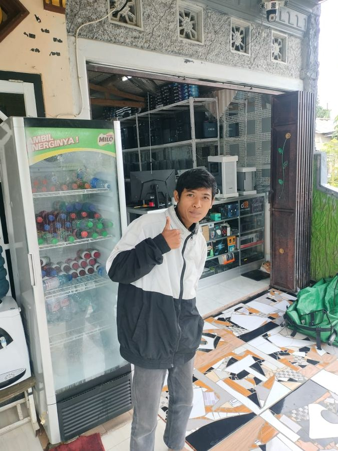
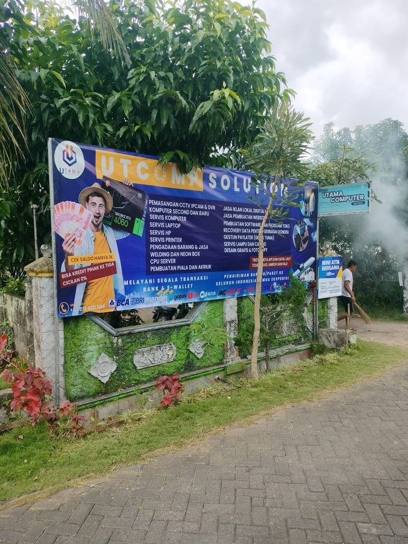
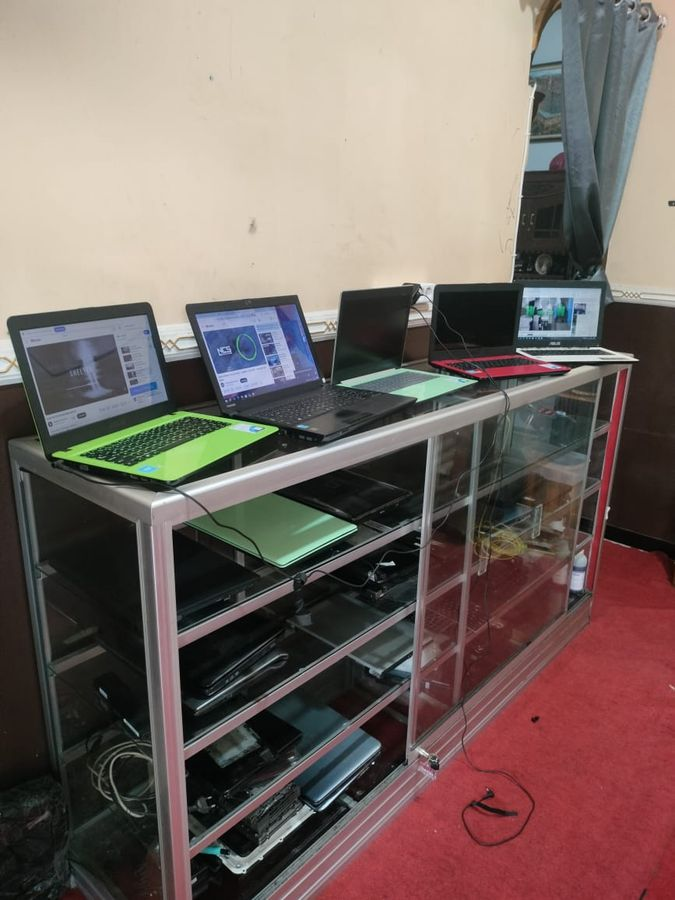

Beli komputer tanpa takut zonk
Barang sampai, cek dulu 30 menit. Nggak sreg? Nggak usah bayar. COD Cek Dulu se-Jawa & Bali.
Cek status servis saya Lihat layanan servis
- ★ 4,9 dari 27 ulasan Google (per September 2026)
- Jambewangi (Panjen), Sempu
- Buka tiap hari 08.30–16.30
- CV resmi & Siplah support

Tiga pekerjaan utama
Semua dikerjakan di bengkel sendiri di Jl. Keramat, Panjen. Harga disebut sebelum dikerjakan.
Servis laptop & PC
Semua merk. Didiagnosa dulu, biayanya disebut sebelum dikerjakan, dan kamu dapat kode servis untuk dilacak sendiri.
SelengkapnyaPC rakitan & laptop
Sebutkan budget, speknya kami susunkan. Laptop baru dan second dicek dulu sebelum diserahkan, dan bisa COD Cek Dulu.
SelengkapnyaCCTV & proyektor
Untuk rumah, kantor, dan perumahan. Bukan cuma dijual, kami yang memasang sampai nyala.
SelengkapnyaLacak servismu sendiri, tanpa nunggu dibalas chat
Punya nota servis dari kami? Kodenya bisa langsung kamu cek sendiri, kapan saja, termasuk di luar jam buka toko.
Sebut budget-nya, kami susun speknya
Harga di bawah ini titik awal, bukan harga mati. Komponen bisa digeser naik-turun sesuai kebutuhan dan isi dompet.
Memuat daftar rakitan…
Masih ragu? Datang saja dulu.
Tanya-tanya tanpa harus beli itu hal biasa di sini. Alamat kami jelas, tokonya benar berdiri di tepi jalan, dan bisa dilihat di halaman kontak.



Kata mereka yang sudah ke sini
★★★★★
COD langsung ke toko, pelayanan sangat ramah. Laptop Thinkpad second kantor, fisik oke, engsel kokoh, layar bening. Sempat cek battery report dan hasilnya masih di atas 80%. Puas belanja di sini
★★★★★
Sangat rekomendasi! Laptop mati total bawa ke sini langsung ditangani teknisi profesional. Pengerjaan cepat, jujur, dan harganya terjangkau. Laptop kembali lancar jaya! Terima kasih utama computer
★★★★★
Barangnya sampai dengan aman,kondisi laptop mulus..penjual responsif dan amanah
Datang, telepon, atau chat
- Alamat
- Jl. Keramat, Panjen, Jambewangi
Kec. Sempu, Kab. Banyuwangi, Jawa Timur 68468 - 0851-4311-1146
- Jam buka
- Senin–Minggu, 08.30–16.30